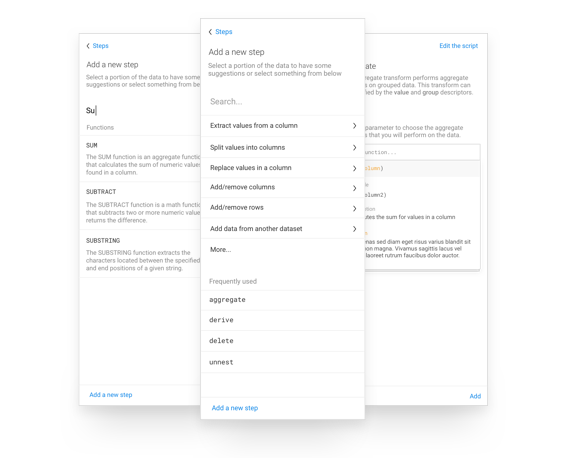
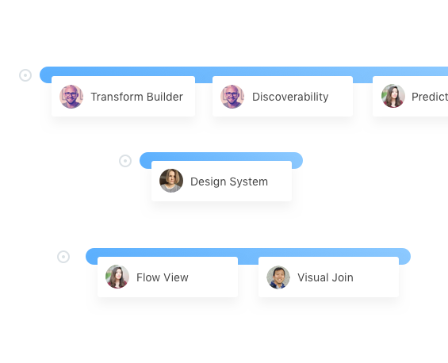

I’m a product designer and design manager interested in data, leading through design, and crafting simple experiences for hard problems.
Product Design Manager at Dropbox
Designer in Residence at Sutter Hill Ventures, Design Director at Trifacta, Product Designer at Splunk
Designing the core experience of a data wrangling product.
 View Case StudyDesigning and implementing a design system.
View Case StudyDesign management experience and perspectives.
 View Case StudyA redesign of the market leading machine-generated data analysis tool.
View Case Study